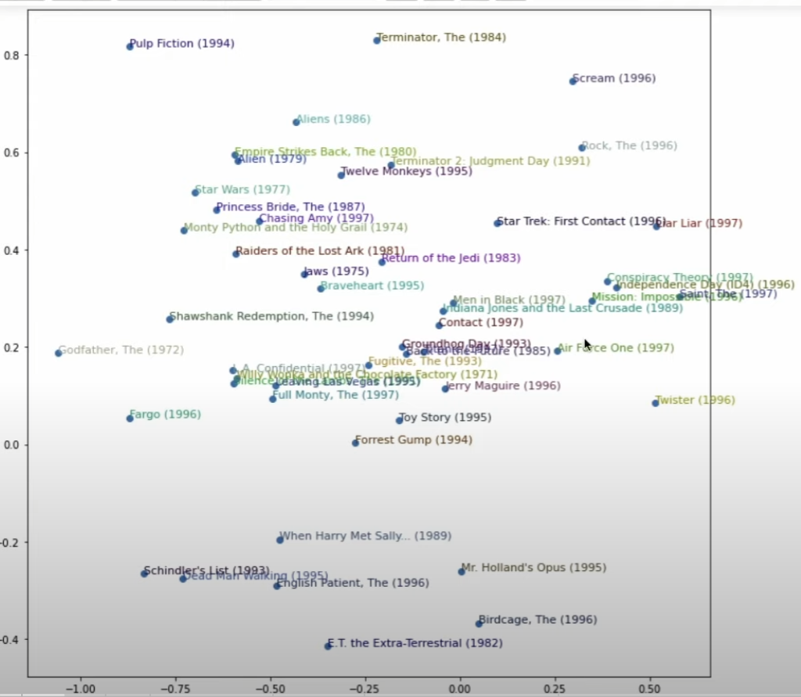

I have now finished part 1 of “Practical Deep Learning for Coders”. I’m glad I’ve done it.
More with Embeddings
Last time, we used a magical Embedding class. This time, we dug into it and saw how it was implemented, which helps with understanding what it actually is and does. Along the way, we saw how PyTorch ends up ‘knowing’ what things are parameters (and thus need to be tuned during the gradient descent step). Little by little, removing the magic and replacing it with understanding. At a certain point though, it is easier to use the magic and just get stuff done of course.
Principle Component Analysis
Jeremy glossed over this super quickly, but pca is apparently a method by which we can compress our ~50 latent factors in the movie ratings example down to just a few, which are then plotted:

This is astoundingly cool. You can tell these movies have some sort of logical grouping to them (although how much of that is humans trying to derive patterns where they might not exist?). But there is absolutely no explicit data about these movies - just lots of ratings from lots of users. And yet… patterns emerge.
Collaborative Filtering and Neural Networks
One thing that crops up now and again is the distinction between machine learning and deep learning. The collaborative filtering we did initially was a sort of ‘matrix completion’. But we can make a neural network with layers and train that instead for a deep learning approach. And as usual, fastai has a shortcut for it:
learn = collab_learner(dls, use_nn=True, y_range=(0,5.5), layers=[100,50])
get_emb_sz
This is the method that enshrines Jeremy’s intuition into a Rule of Thumb. Sigh.
Part 2: Convolutional Neural Networks
I was a bit disappointed that there was just about half an hour dedicated to CNNs before the course sort of abruptly ends. This was an interesting look at one of the different things that can go in the middle of a neural network (instead of just linear layers of matrix multiplications).
I already knew the gist of CNNs: a ‘sliding window’ operates on a small grid of an image at each step, instead of just a single pixel. This window size is called its kernel. What I didn’t realize is that this means a layer in a CNN only has weights for the size of the window (so just 9 weights if it’s a 3x3 window), rather than a weight for every pixel in the image. That seems very different from a fully connected layer!
This blog post has a neat summary of how to view CNNs
Max Pooling
One aspect that was only lighted touched on is the reduction in size of the input at each layer. Apparently an older method would be to do “max pooling”, which is essentially to take the max pixel value out of every group of, say, 2x2 pixels (giving a 4x reduction in size). This can be repeated until you get small enough to make some sort of final output on the image (e.g. does any cell of this 7x7 reduced image have a high enough “yes there’s a bear” value? Then the image has a bear).
Here we touch on another “the last part of a model is important” bit of wisdom. That final calculation of “average pooling” may be a good choice for determining if a picture is of a bear, but it may be super bad at answering if a wildlife camera photo has a small bear somewhere in it (because overall, that’s not a picture of a bear - only a tiny bit would be strongly bear-like). Sometimes “max pooling” is better, sometimes “average pooling”. I imagine there are others.
Dropout
Create a layer of random data. Use that to make a ‘dropout filter’ that contains either 0 or 1, based on whether the corresponding cell of the random data exceeds some fixed threshold (e.g. 20% dropout). Then multiply your convolution layer by the dropout layer to randomly remove some of the data (without adding noise). The idea is that humans can deal with this sort of incomplete data, so we should train our vision models similarly. This helps with avoiding overfitting and can help generalize a model, at the expense of doing well at training.
This is kind of like data augmention! Except it happens in the middle of the activation layers, rather than at the input.
Today’s Concerns
That’s the end of part 1 of the course: where to now? I see a couple of options:
Continue with Part 2: From Deep Learning Foundations to Stable Diffusion. This is the logical continuation and has some appealing pieces: how to read research papers and how to basically implement Stable Diffusion. That still seems like magic to me, so demystifing that would be great.
Do the Hugging Face Deep Reinforcement Learning Course. This is right up my alley with training models to play video games. I think I’d be motivated to do this one, and now feel better prepared to actually do it.
Make something, like a game or an app.
At the moment, I think #2 is the sweet spot between academic and practical.